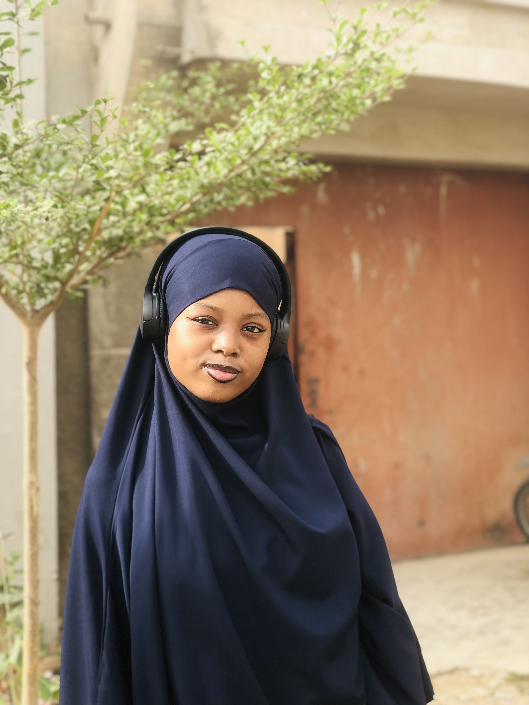

About Me💕
Salam alaikum, Hey, I'm Zainab Mustapha Yola, a passionate software engineering student from northwest university kano,Nigeria, who loves building web and mobile applications.I'm currently learning Htlm,Css, and JavaScript.
My Passion ❤️
My dream is to become a software engineer who builds cool stuff that actually helps people.And when I'm not in front of my screen I'm probably on basketball court shooting hoops🏀basketball is my happy place. I'm super into full-stack development because it lets me do a bit of everything from designing slick Uls to building solid backends. And honestly? Coding gives me the same rush as hitting a 3-pointer. Whether I'm building apps or playing ball, I'm all about focus, creativity, and pushing myself grow.